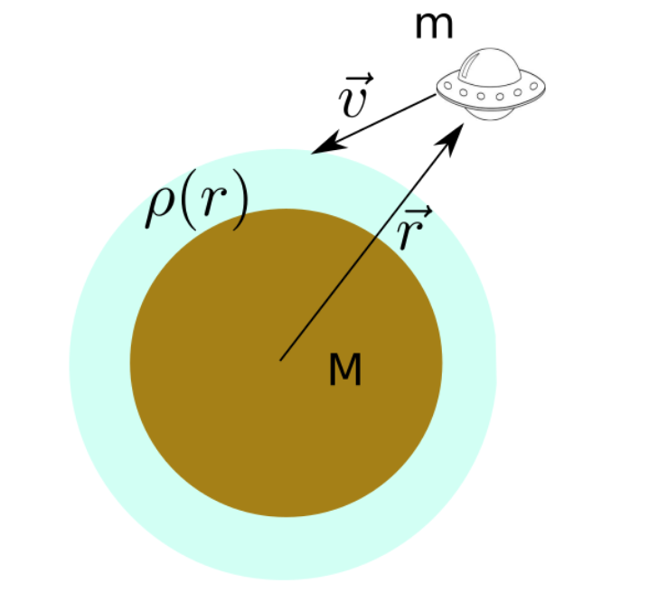

Forrige side🙂 🙁Introduksjon

Oppgave 1B8 som er en av innleveringsoppgavene går ut på å myklande en romsonde på en planet med atmosfære som illustert i figuren. I løpet av dette forelesningsnotatet vil du lære det du trenger for å løse denne oppgaven og mer til. Men før vi setter igang så skal vi varme opp litt med å fort sjekke at vi har kunnskapen fra del 1A på plass, samt se hva du allerede kan om temaene i del 1B. Trykk her for å varme opp
Har du varmet opp? Er du svett og klar til å starte kampen? ...og sendt inn skjemaet? Nei Ja